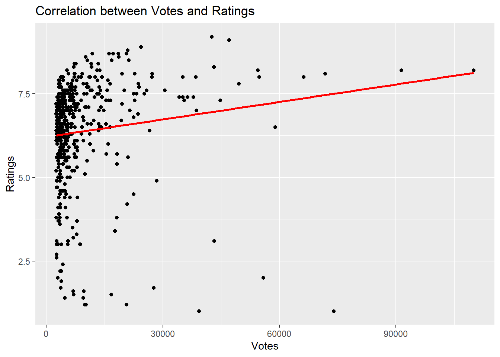
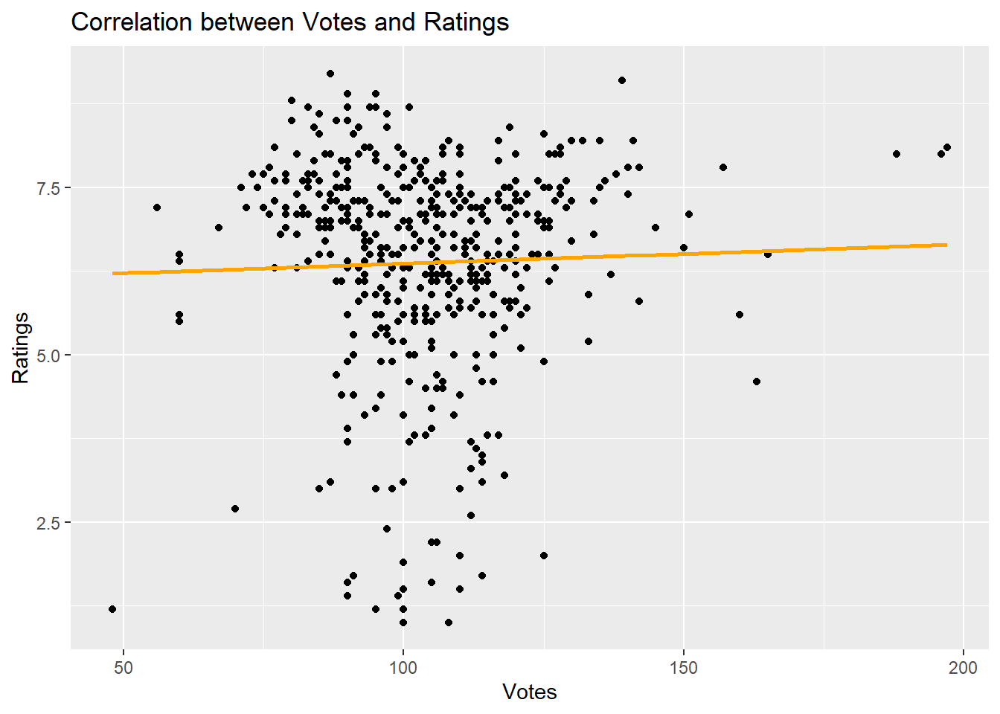

Title Year Duration Rating Votes
467 Cumali Ceber 2 2018 100 1.2 10253
468 Müjde 2022 48 1.2 9940
469 15/07 Safak Vakti 2021 95 1.2 20612
470 Reis 2017 108 1.0 73988
471 Cumali Ceber: Allah Seni Alsin 2017 100 1.0 39272
Among the movies in the Top_5, I watched other movies except Cem Yılmaz’s movie. I was surprised that CM101MMXI Fundamentals was ranked in the top 5 rather than second, but I think the ranking of the other 4 movies is correct.
Title Year Duration Rating Votes
1 Hababam Sinifi 1975 87 9.2 42594
2 G.O.R.A. 2004 127 8.0 66197
Both films were loved by a large audience in their time and are cult films.
(c)
I didn’t have chance to completed.
(d)
Click the see the code
ggplot(movie_data, aes(x = Votes, y = Rating)) +geom_point() +geom_smooth(method ="lm", se =FALSE, color ="red") +labs(title ="Correlation between Votes and Ratings",x ="Votes",y ="Ratings")

Click the see the code
cor(movie_data$Votes, movie_data$Rating)
[1] 0.1318886
There is positive correlation between ratins and votes but not a strong correlation, its relatively week because the value of the correlation is 0.1318877.
(e)
Click the see the code
ggplot(movie_data, aes(x = Duration, y = Rating)) +geom_point() +geom_smooth(method ="lm", se =FALSE, color ="orange") +labs(title ="Correlation between Votes and Ratings",x ="Votes",y ="Ratings")

Click the see the code
cor(movie_data$Duration, movie_data$Rating)
[1] 0.03303303
There is a week positive correlation between ratings and durations because the value of the correlation is 0.03303303